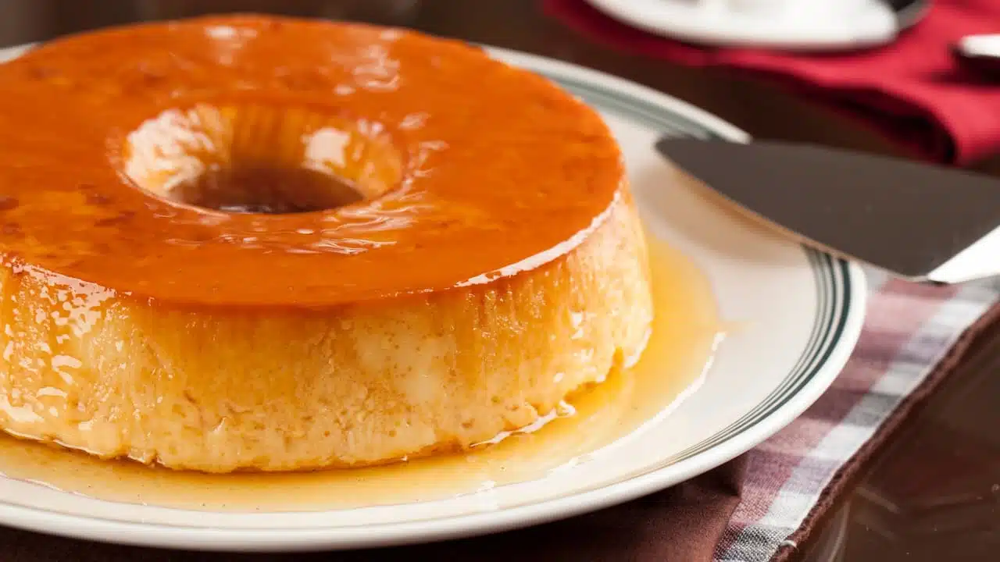

←

🍮 Ingredientes
- 5 huevos
- 1 litro de leche
- 200 g de azúcar
- 1 cucharadita de esencia de vainilla
🍯 Para el caramelo
- 150 g de azúcar
- 2 cucharadas de agua
👩🍳 Paso a paso
-
Preparar el caramelo: en una sartén, colocar el azúcar y el agua. Cocinar a fuego medio sin revolver hasta que
se derrita y tome color ámbar.
-
Verter el caramelo caliente en el fondo del molde donde harás el flan. Cubrir bien la base y dejar enfriar.
-
Batir ligeramente los huevos con el azúcar (sin hacer espuma), agregar la leche y la vainilla. Mezclar bien.
- Verter la preparación en el molde acaramelado.
-
Llevar al horno a baño María, a 160 °C, durante 1 hora aprox. o hasta que al insertar un cuchillo salga
limpio.
- Dejar enfriar, luego llevar a la heladera mínimo 4 horas (ideal de un día para el otro).
- Desmoldar y servir solo, con crema o dulce de leche 😋.